كلمة حاسوب هي ترجمة للكلمة الإنجليزية (computer) مشتقة من الفعل compute بمعنى يحسب، وترجمت إلى العربية بعدة أسماء: كمبيوتر، العقل الإلكتروني، الحاسب الآلي الإلكتروني، وهو عبارة عن جهاز إلكتروني يقوم باستقبال المعلومات وتخزينها ومعالجتها قصد إظهارها واستعمالها وقت الحاجة، ويسمى كذلك "PC" أي Personal Computer أي الحاسوب الشخصي.
حاسوب مكتبي

حاسوب محمول
من خلال تعريفنا للحاسوب فهو إدخال معلومات ومعالجتها وإظهار النتائج، إذن يمكن تقسيمه إلى ثلاثة عناصر أساسية هي:
وهي الأجهزة التي من خلالها يتم إدخال المعلومات إلى وحدة المعالجة، وتتلخص فيما يلي:
تتكون من أزرار أو مفاتيح لإدخال المعلومات إلى جهاز الحاسوب، وتكتب هذه الأزرار أحرفا أو أرقاما أو رموزا.

الفأرة: هي إحدى وحدات الإدخال في الحاسوب، يتم استعمالها يدويا للتأشير والنقر في الواجهة الرسومية وعلى الأيقونات. تحتوي الفأرة الافتراضية حاليا على زرين وعجلة في المنتصف تعمل كزر وسطى، والفأرة نوعان هما:
فأرة الكرة
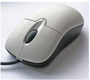

الميكروفون
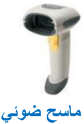
يدوي
ماسح ضوئي
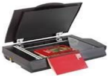
مكتبي
جهاز يتصل بالحاسوب حيث يتكلم المستخدم في هذا المكبر فيخزن صوته على الكمبيوتر بواسطة برنامج خاص ويخرج في السماعات، ويستخدم أيضا في التحدث الصوتي بين شخصين على الإنترنت بواسطة برامج المحادثة والتواصل.
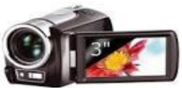
تستعمل لالتقاط الصور والفيديوهات وحفظها في ذاكرتها، حيث يمكن نسخها على قرص الحاسوب لاستعمالها أو تغييرها، كما يمكن ربطها بالحاسوب والتسجيل مباشرة فيه.
كاميرا رقمية

تستخدم من أجل التحدث بين فردين على الإنترنت حيث يمكن لكل فرد رؤية الآخر بوضوح عبر هذه الكاميرا والتحدث معه بالصوت والصورة، وتكون مدمجة في الحواسيب المحمولة.
كاميرا الويب
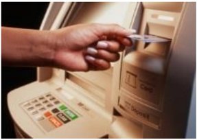

تعتبر من وسائل إدخال المعلومات الحديثة، تستخدم في جهاز الصرف الآلي في المصارف (البنوك، شبابيك البريد) حيث يمكن للفرد أن يضغط على الأيقونات الموجودة على الشاشة بإصبعه لإجراء عملية.
يستخدم هذا القلم أحيانا بديلا عن الإصبع في شاشة اللمس، نجده مثلا في جواز السفر البيومتري حيث يتم الإمضاء به.
قلم ضوئي
لوحة لمسية
الجهة الأمامية

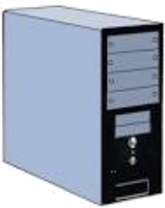
توجد في الحواسيب المحمولة وهي بديلة عن الفأرة، حيث يمكن وضع الإصبع على هذه اللوحة وتحريكه فيتحرك السهم أو الأيقونة الموجودة على الشاشة.
وهي الوحدة التي يتم فيها القيام بجميع العمليات من تخزين ومعالجة وغيرهما، وتحتوي على:
هي تلك العلبة الفولاذية التي تحوي البطاقة الأم وكل مكونات الحاسوب الداخلية، وهي مرتبطة بالوسط الخارجي بواسطة مآخذ الكهرباء ووصلات البيانات (الفأرة، لوحة المفاتيح، الشاشة، الطابعة ...).

هي وحدة إمداد وتحويل التيار الكهربائي للوحدة المركزية بكل مكوناتها.
علبة الإمداد أو التغذية بالكهرباء
هي لوحة إلكترونية يتصل بها كل مكونات الحاسوب الداخلية ومختلف وحدات الإدخال والإخراج، حيث توصل باللوحة الأم عن طريق وصلات أو كابلات.
جهة المنافذ و الوصلات
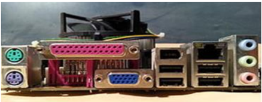

ويطلق عليه تسمية CPU (Unité Centrale de Traitement)، ويمثل عقل الحاسوب حيث يقوم بتسيير وتنسيق كل المهام، ويقوم بتنفيذ التعليمات ومعالجة البيانات التي تتضمنها البرمجيات. ويطلق عليه تسمية المعالج الدقيق (Microprocessor; Microprocesseur).

المعالج من الجهة السفلى (جهة الإبر)
المعالج من الجهة العليا

1 KHz = 10³ Hz ; 1 MHz = 10³ KHz ; 1 GHz = 10³ MHz.
| سرعته | المعالج |
|---|---|
| 100 MHz | Intel 80486 |
| من 1,3 GHz إلى 3,8 GHz | Pentium 4 |
| 2,4 GHz | Core 2 Duo |
| 3,33 GHz | Intel Core i7 |
هي وحدة تخزن فيها المعلومات وتحتوي على قسمين:
الذاكرة الحية
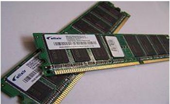
الذاكرة الميتة
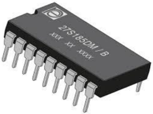
وهي الذاكرة التي تخزن المعلومات أثناء المعالجة، من ميزاتها:
وهي ذاكرة تصمم من قبل الشركة المصممة للوحة الأم، ومن ميزاتها:
هي الأجهزة والأدوات التي يتم تخزين المعلومات والبرامج فيها بصفة مؤقتة أو دائمة، نذكر منها:
هو قرص مثبت بالوحدة المركزية ويعتبر وحدة التخزين الرئيسية بالحاسوب، ومن مميزاته:
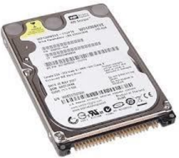
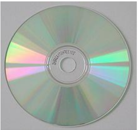
قرص مضغوط CD
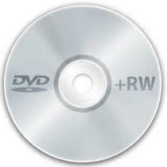

قرص صلب خارجي
القرص المضغوط (Compact Disc) هو قرص بصري يستخدم لتخزين البيانات.
قرص الفيديو الرقمي (Digital Video Disc) أو قرص متعدد الاستخدامات الرقمي (Digital Versatile Disc)، والذي يعرف بـ (DVD)، هو قرص بصري يستخدم كوسيط لتخزين البيانات.
يطلق عليه كذلك تسمية: فلاش ديسك، وهو وحدة تخزين متحركة (amovible)، تتصل بالحاسوب عن طريق المنفذ USB (Universal Serial Bus، أي الناقل التسلسلي العام)، ويحتوي ذاكرة وامضة.
رمز ذاكرة الفلاش
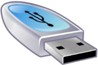
بطاقة الذاكرة هي ذاكرة فلاش إلكترونية صلبة لتخزين البيانات، تستعمل في آلات التصوير الرقمية، وأجهزة الحاسوب، والهواتف، وألعاب الفيديو، والعديد من الأجهزة الإلكترونية الأخرى.


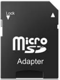
بطاقة ذاكرة
مضاعفات البايت (Byte)
0 1 1 0 0 1 0 1
بطاقة شبكة لا سلكية Wireless
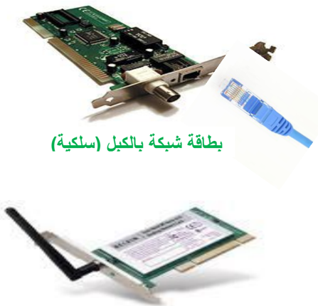
وتسمى كذلك network adapter أو LAN Adapter.
وغالبا ما تعرف بالاختصار NIC وهو اختصار لـ Network Interface Card ويعني واجهة بطاقة الشبكة، ودورها أنها تسمح لمستخدم الحاسوب بالتواصل مع الحواسيب الأخرى عن طريق الشبكة.
بطاقة الصوت

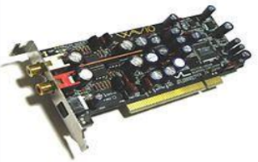
هي البطاقة التي تتصل بشاشة الحاسوب ودورها توصيل الصور والبيانات وعرضها على الشاشة.
بطاقة الصوت أو البطاقة السمعية هي بطاقة تسهل المدخلات والمخرجات من الإشارات الصوتية من وإلى جهاز الحاسوب، حيث توفر العنصر الصوتي لتطبيقات الوسائط المتعددة: مثل القرآن، والموسيقى، وأفلام الفيديو والترفيه (الألعاب).
طابعة نقطية
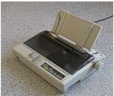
طابعة ليزرية (Laser)

الشاشة: هو جهاز يشبه التلفاز يقوم بعرض البيانات والصور والفيديو التي تتم معالجتها


السماعات: هي وحدة تقوم بإخراج الصوت من الحاسوب وإسماع الشخص كل البيانات الصوتية التي توفرها بطاقة الصوت، مثل القرآن.

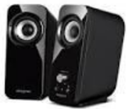
هي الوحدات التي تخرج أو تظهر نتائج المعالجة، ومنها:
الطابعة: هي ذلك الجهاز الذي يسمح بتحويل البيانات المرئية على الشاشة إلى أوراق، وهي عدة أصناف: